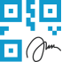
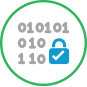

NOS PRODUITS
Certificat ID-Trust
Le certificat ID-Trust délivré par l'agence nationale de certification électronique TUNTRUST est votre carte d’identité numérique sur Internet. Ce certificat a un double usage : Il vous permet d’apposer votre signature électronique sur les documents électroniques pour manifester votre consentement par rapport au contenu de l’acte signé. Il permet également de vous authentifier auprès des plateformes de services à distance pour effectuer vos transactions en ligne en toute sécurité, par exemple envoyer un émail sécurisé, émettre un virement bancaire, accéder au site de la télé-déclaration fiscale, etc.
Certificat ID-TrustCachet
électronique Enterprise-ID
Le cachet électronique Enterprise-ID permet d’apposer une signature au nom d’une personne morale en identifiant clairement sa raison sociale, son matricule fiscal, etc. Le cachet électronique de votre entreprise permet d’assurer l’intégrité et l’authenticité des documents numériques de votre entreprise. Le cachet électronique Enterprise-ID peut être utilisé pour la dématérialisation des procédures administratives, il permet de sceller vos documents numériques tels que les factures, les bulletins de paie, etc. Il peut également être utilisé pour la conservation sécurisée de vos documents.

Cachet électronique visible
Le cachet électronique visible TN CEV 2D-DOC permet d’assurer l’intégrité et l’authenticité de vos documents électroniques et papier en y apposant un code à barre à deux dimensions (QR code) contenant les informations clés de vos documents verrouillées par le cachet électronique de l'entité émettrice. Le certificat TN CEV 2D-DOC est utilisé avec la solution QR-Sign de l'agence nationale de certification électronique TUNTRUST pour créer un QR Code signé qui vous permettra de sécuriser vos documents originaux ou photocopiés contre la fraude. Ainsi vous pouvez sécuriser des documents tels que les bulletins de paie, les diplômes, les factures…
Cachet électronique visible
TN CEV 2D-DOC
Le cachet électronique visible TN CEV 2D-DOC permet d’assurer l’intégrité et l’authenticité de vos documents électroniques et papier en y apposant un code à barre à deux dimensions (QR code) contenant les informations clés de vos documents verrouillées par le cachet électronique de l'entité émettrice. Le certificat TN CEV 2D-DOC est utilisé avec la solution QR-Sign de l'agence nationale de certification électronique TUNTRUST pour créer un QR Code signé qui vous permettra de sécuriser vos documents originaux ou photocopiés contre la fraude. Ainsi vous pouvez sécuriser des documents tels que les bulletins de paie, les diplômes, les factures…

Le certificat signature de code de l'agence nationale de certification électronique TUNTRUST assure l’authenticité, la sécurité et l’intégrité d’un code signé. La signature de code vérifie l'identité de l'émetteur d'un jeu de codes spécifique, et atteste qu'il n'a pas été modifié depuis sa signature. Elle permet également d'assurer la protection de vos utilisateurs, de votre marque et de votre propriété intellectuelle.
Certificat signature de Code
Le certificat signature de code de l'agence nationale de certification électronique TUNTRUST assure l’authenticité, la sécurité et l’intégrité d’un code signé. La signature de code vérifie l'identité de l'émetteur d'un jeu de codes spécifique, et atteste qu'il n'a pas été modifié depuis sa signature. Elle permet également d'assurer la protection de vos utilisateurs, de votre marque et de votre propriété intellectuelle.
NOUS CONTACTER :


© 2024 Reserved. All rights reserved.